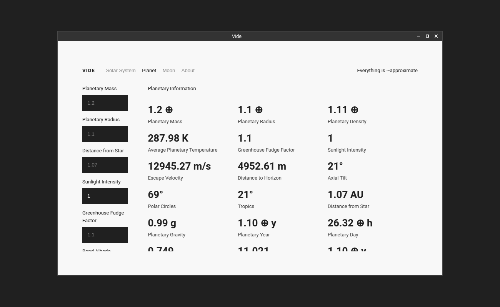
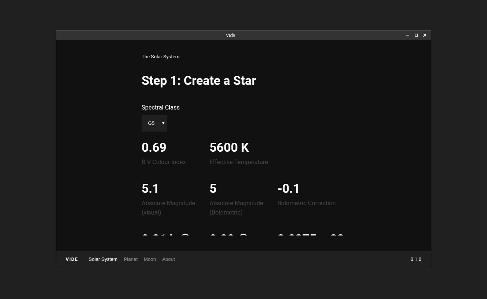
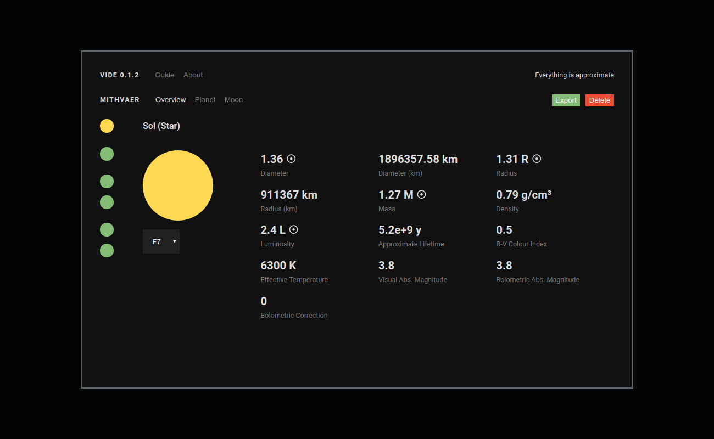

Vide is a worldbuilding tool that aids in the creation of somewhat plausible planetary systems and celestial bodies, letting users create worlds with high in-depth details like planetary orbits, atmospheric compositions, gravity, etc.
EV15B2 22.8 10.8D 8.7V 3.2R